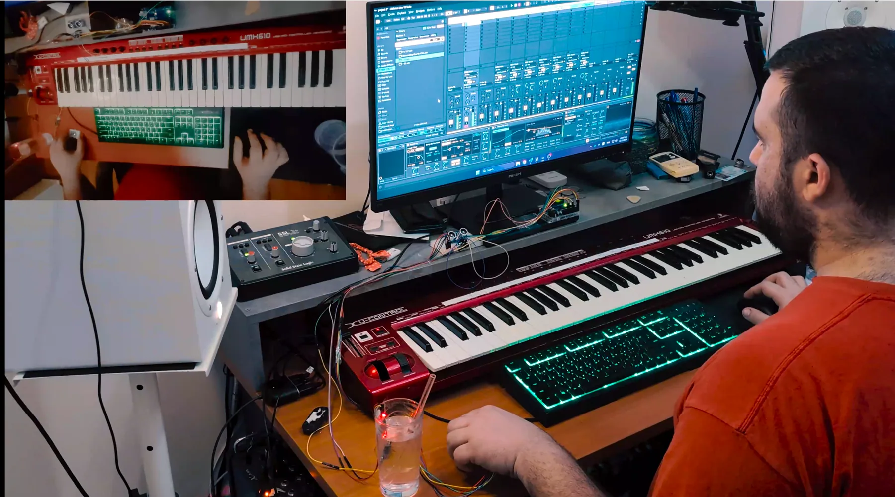
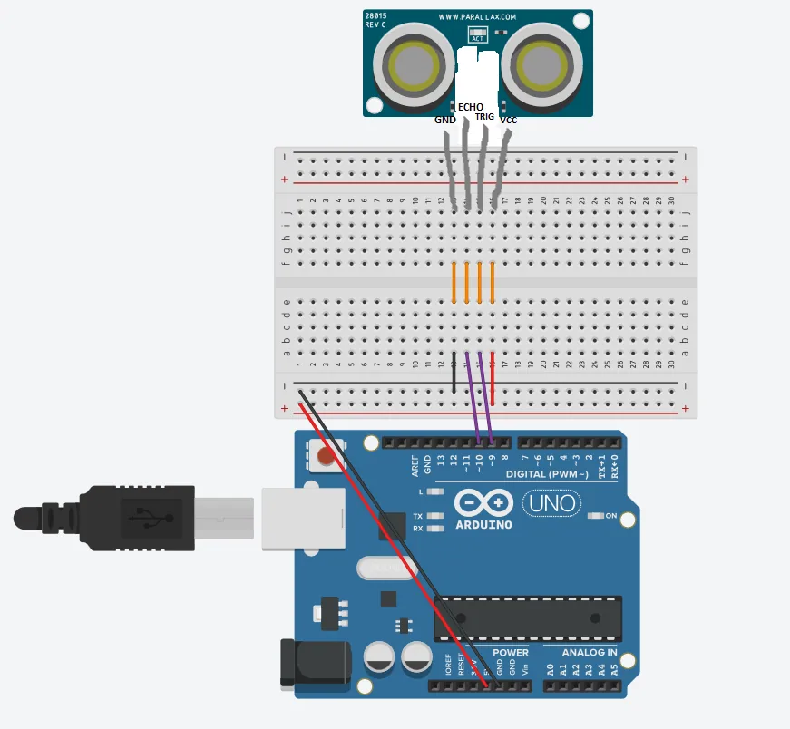
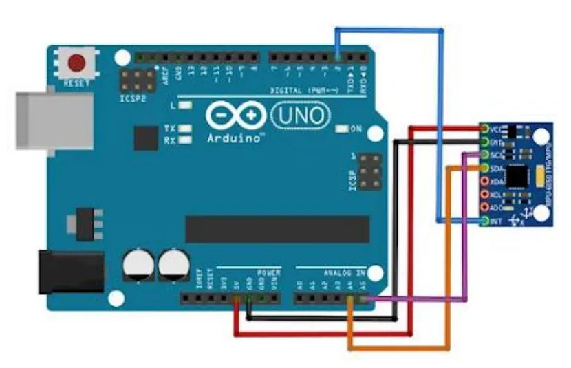
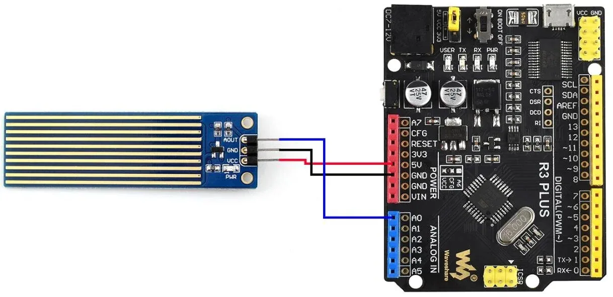
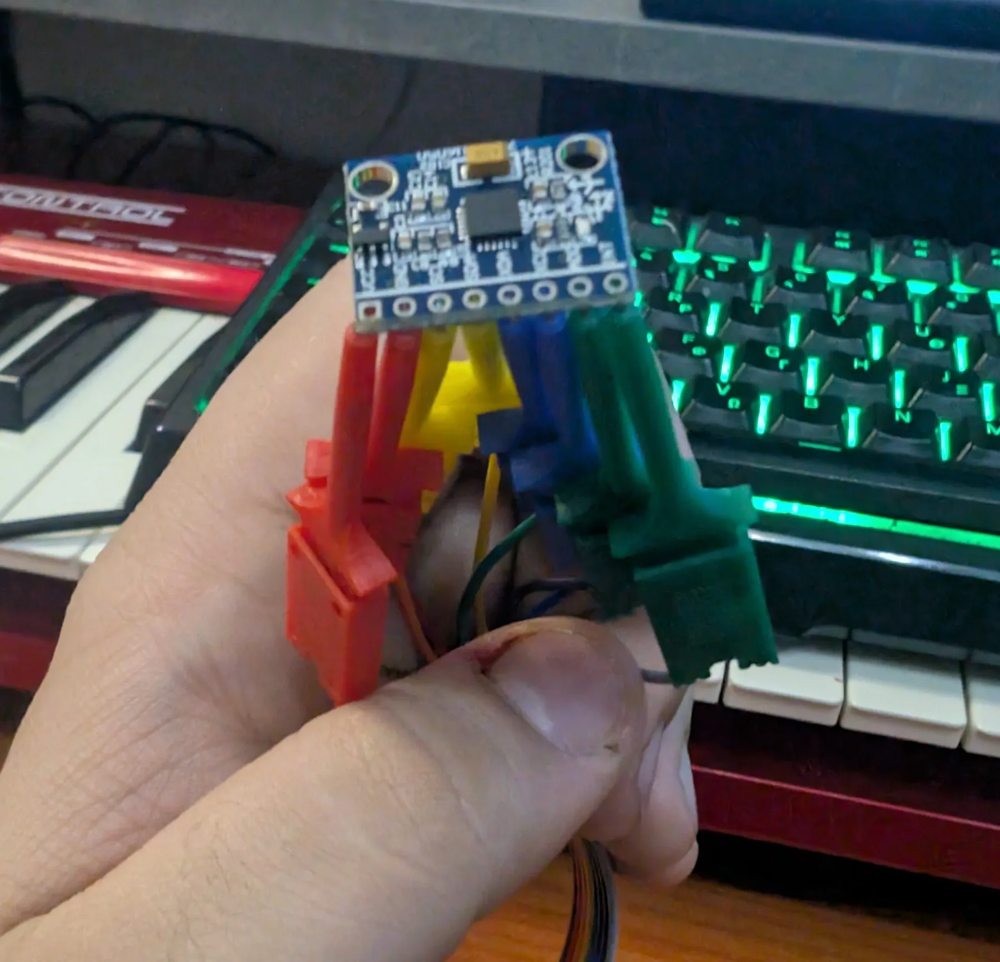
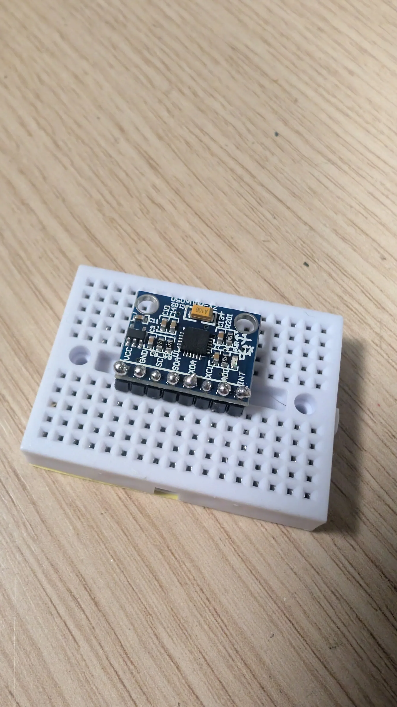
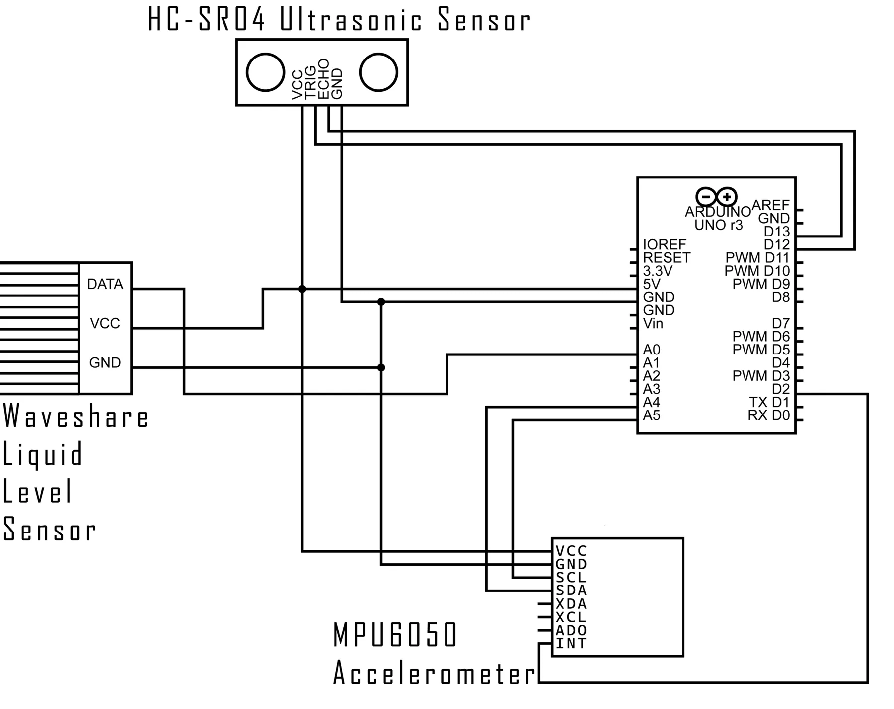

Interactive Live Performance System
Arduino και σένσορες που ελέγχουν το Ableton μέσω Max MSP.

Κατά το 5ο εξάμηνο της φοίτησής μου στο Μητροπολιτικό Κολλέγιο, για τους σκοπούς του μαθήματος «Music Technology and Production» δημιούργησα ένα σύστημα από Arduino και σένσορες τα οποία μέσω της Max MSP τροφοδοτούν ρυθμιστικά του προγράμματος Ableton, έτσι ώστε όταν εγώ αλληλεπιδρώ με τους σένσορες μπροστά μου να μπορώ εν δυνάμει να χειρίζομαι τις παραμέτρους του DAW.
Ως mainboard χρησιμοποίησα το Arduino Uno Rev3. Οι σένσορες που αποφάσισα να χρησιμοποιήσω είναι:
- Ο HC-SR04 Ultrasonic Sensor, ο οποίος στέλνει υπερηχητικά σήματα και στη συνέχεια λαμβάνει πίσω την ανάκλαση του σήματος. Υπολογίζοντας τη διαφορά χρόνου αναπαραγωγής και ακρόασης, το Arduino επιστρέφει στον χρήστη την απόσταση που έχει το πιο κοντινό αντικείμενο από τον σένσορα.
- Ο MPU6050 Accelerometer, ένα επιταχυνσιόμετρο και γυροσκόπιο τριών αξόνων. Για το συγκεκριμένο project με ενδιαφέρει η λειτουργία του γυροσκοπίου, δηλαδή η γωνία που έχει ο σένσορας σε κάθε άξονα και όχι η επιτάχυνσή του.
- Ο Waveshare Liquid Level Sensor, ο οποίος χρησιμοποιώντας κατακόρυφες μεταλλικές επαφές και αξιοποιώντας την αγωγιμότητα του νερού, επιτρέπει στο Arduino να επιστρέψει στον χρήστη την τιμή ανάλογα με τη στάθμη του υγρού μέσα στο οποίο βρίσκεται ο σένσορας.
Πρώτα διάβασα τις οδηγίες εγκατάστασης για τον κάθε σένσορα:
maker.pro: MPU-6050waveshare.com: Liquid Level Sensorprojecthub.arduino.cc: HC-SR04Συνδεσμολογία
Μετά βρήκα τα διαγράμματα με τη σωστή συνδεσμολογία.



Ο MPU6050 δεν είχε έτοιμα pins για σύνδεση όπως οι άλλοι δύο σένσορες, οπότε για την αρχική δοκιμή τον σύνδεσα με καλώδια τύπου κροκοδειλάκι.

Στη συνέχεια έκανα συγκόλληση του εξαρτήματος με το οποίο ήρθε ο σένσορας.

Κώδικας
Συνέδεσα τον κάθε σένσορα ξεχωριστά επάνω στο Arduino και άρχισα να ψάχνω τον εκάστοτε κώδικα. Μέσα από το library του Arduino IDE βρήκα τους κώδικες για τον κάθε σένσορα.
Δοκίμασα τον κάθε σένσορα ξεχωριστά και αφού είδα ότι δουλεύουν ξεκίνησα να συγχωνεύω τους 3 κώδικες σε έναν, έτσι ώστε να μπορέσω να λειτουργήσω και τους 3 σένσορες ταυτόχρονα.
Στη συνέχεια, με βάση τις φωτογραφίες, δημιούργησα ένα δικό μου διάγραμμα κατά το οποίο και οι τρεις σένσορες συνδέονται ταυτόχρονα επάνω στο Arduino.

Ως αποτέλεσμα οι 3 σένσορες δούλεψαν ταυτόχρονα και στο serial output έλαβα το εξής κάθε 10ms:
Όπου Distance είναι η απόσταση του ultrasonic σένσορα σε εκατοστά από 0 έως 400, Water level είναι η στάθμη του νερού από 0 έως 650, και angle X, Y, Z είναι η γωνία στην οποία βρίσκεται το γυροσκόπιο σε κάθε άξονα, από -90 έως +90 περίπου.